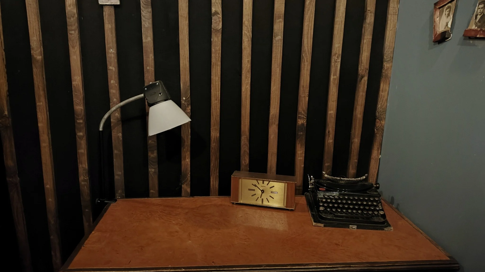
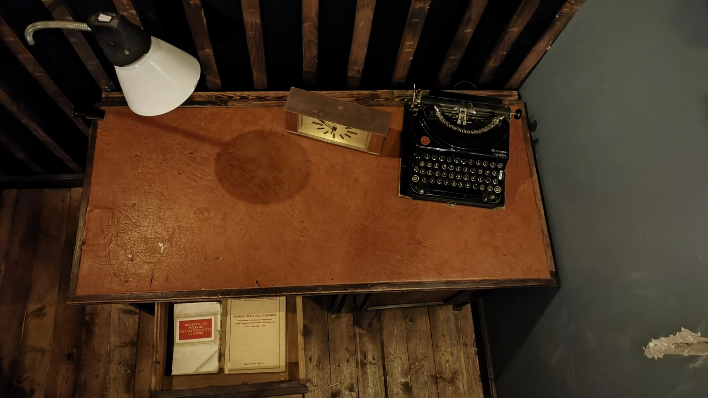

FAMI
LOCK
STARZIK · PAMIĄTKA PO GRZE
JESZCZE JEDNA HISTORIA
Tajna szuflada Starzika
Dotknij przedmiotów. Otwórz szufladę. Zobacz, co zostało na biurku.


Lampka
Zegar
Maszyna do pisania
Szuflada
Wybierz przedmiot na fotografii
Otwórz szufladę
×